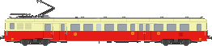
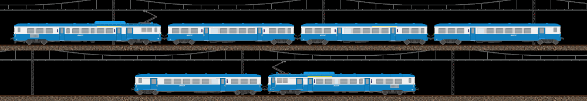
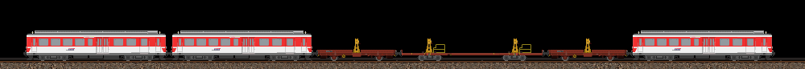

Z 7100

Version d'origine.
Cette page présente une collection détaillée de dessins représentant des matériels ferroviaires réels, réalisés au fil du temps. Vous y trouverez des automotrices, locomotives, voitures, remorques et wagons ayant circulé sur différents réseaux français et européens. Chaque illustration est accompagnée au mieux d’informations historiques et techniques.
Une large partie de cette page est dédiée au matériel à voie métrique, qui m'intéresse particulièrement.
Première série d'automotrices de lignes de la SNCF, les Z 7100 ont été construites de 1960 à 1963 et sont conçues comme une version électrique des autorails X 2800 avec une esthétique proche.
En même temps que la production des motrices, une série de remorques dites renforcées ont été commandées, basées sur les XR 6000. A noter que ces remorques sont quasiment identiques entre elles avant GRG, qu'elles soient pilotes ou non.
Ces automotrices ont été réalisées par MLG, mais les dessins datant de ~2006, ils ne sont pas aussi précis que d'autres de ses dessins plus récents. Appréciant beaucoup ce matériel, j'ai donc redessiné la série des Z 7100 et ses dérivées dans tous ses états : d'origine, après première révision, avec toit rouge et après GRG finale. Les principaux éléments retravaillés sont : le bas de caisse, les éléments de toiture, les cabines et les bogies.
Deux automotrices ont été commandées pour circuler sous courant monophasé 25 kV - 50 Hz (Z 9060 et Z 9061, renumérotées en 1964 - Z 8001 et Z 8002).
Application du toit rouge vers la fin des années 60.
Les remorques pilotes ZS sont réimmatriculées ZRBDx ou ZRABDx selon leur aménagement, suivant la nomenclature de 1962.

Dans les années 80, les Z 7100 subissent une lourde modernisation, inspirée par celle pratiquée sur les X 2800. Modifications entre autres : réaménagement intérieur type Z2, câblage électrique complètement revu avec la suppression d'un pantographe et aptitude à l'Unité Multiple, auparavant impossible.
Le matériel est réorganisé en rames indéformables de 2 ou 4 éléments, couplables par deux, de façon suivante :
Z 7100 + ZRBDx 17100
Z 7100 + ZRB 27100 + ZRAB 27200 + ZRBDx 17100
Ainsi, il n'y a plus de remorques pilotes mixtes ZRABDx (transformées en ZRBDx).
Compositions types :
Suite à l'arrivée des premiers TGV PSE en 1978, ne pouvant redevenir une Z 7100 ni devenir un engin de mesures à cause des modifications effectuées sur le châssis, la Z 7001 fut radiée en 1981 et ferraillée quelques années plus tard.
Collection de divers engins existants ou ayant existé que j'ai pu reproduire.
À l’exception d'automoteurs et de quelques locomotives, une grande partie du matériel métrique français est absente des collections de MLG. Passionné par ces chemins de fer, j’ai donc entrepris de recréer certains de ces éléments manquants.
Le réseau ferroviaire corse fut mis en service entre 1888 et 1935. La partie orientale du réseau fut détruite en 1943 et ne fut jamais reconstruite. Après la guerre, l’exploitation connut de lourdes difficultés financières et varia entre CFD, État et différentes compagnies privées.


Un parc impressionnant de 539 wagons de marchandises fut introduit par les CFD en Corse entre 1888 et 1930. Le seul réseau métrique de France où a circulé des trains de marchandises au-delà des années 2000 !
G = tombereau ; H = plat ; K = couvert avec trappes de ventilation ; v = équipé du frein à vide. D’autres lettres existent, mais seules celles employées par les wagons présentés ci-dessous sont indiquées.
Mise en service en 1902, la ligne du Blanc-Argent relia, à son apogée, Le Blanc (sous-préfecture de l’Indre) à Argent-sur-Sauldre (dans le Cher) jusqu’en 1939. Aujourd’hui, elle n’est plus exploitée que sur deux tronçons : Salbris–Valençay, desservi par des TER, et Valençay–Argy, parcouru par le train touristique du Bas-Berry. Le trafic marchandises, quant à lui, a disparu définitivement en 1988.
La plupart des wagons du BA provenaient d'autres réseaux (PO-Corrèze, Réseau breton...). Certains ont été préservés par le Train du Bas-Berry.
Ci-dessous, principalement des engins de travaux de la ligne de Saint-Gervais – Vallorcine.
Composition de travaux :
